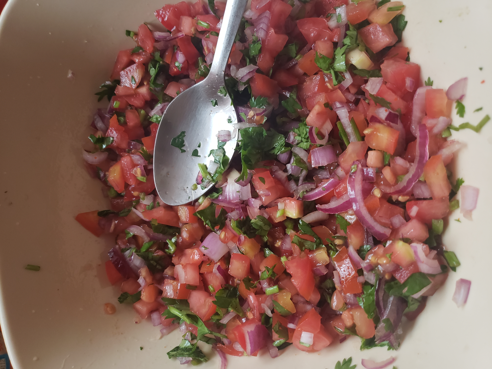

Below are some of the exciting recipes i have been able to try and share
Tortillas are a mexican cuisine that have been in the world for hundreds of years.
Its a very simple recipe that only takes a few minutes tom prepare and can be enjoyed with a side of dip or salsa.
